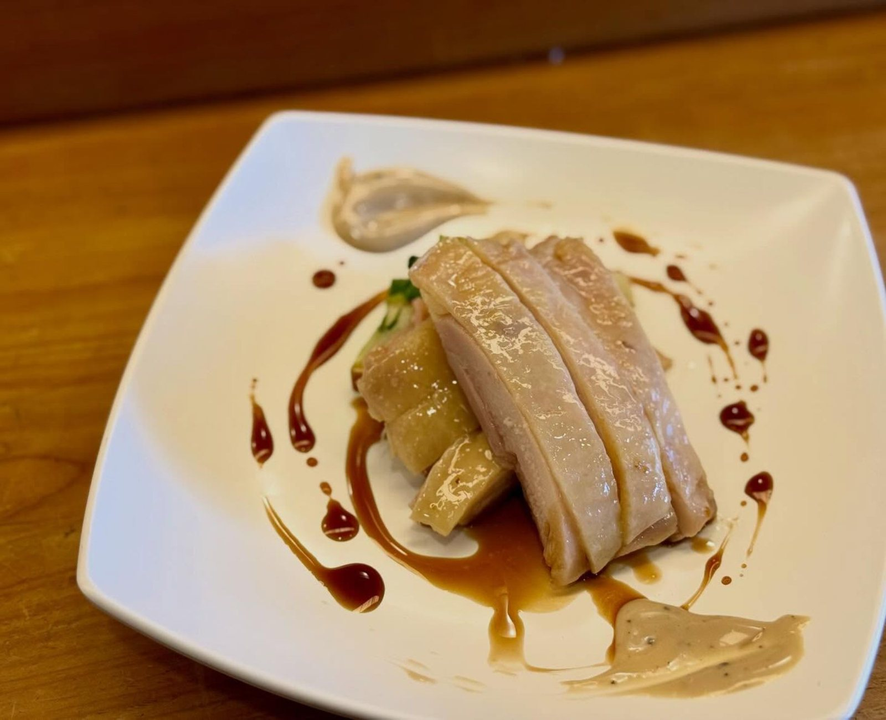
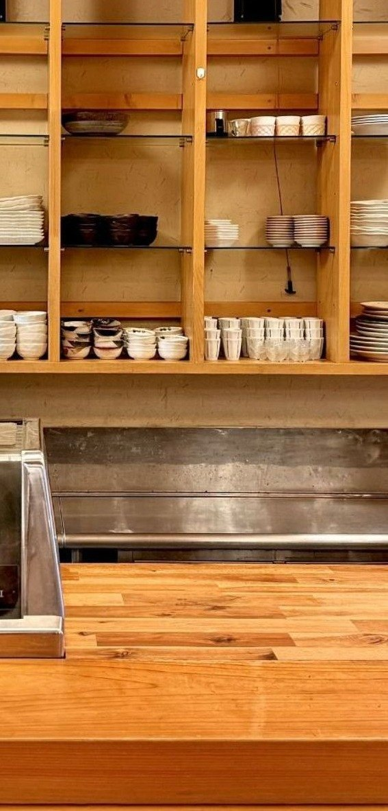
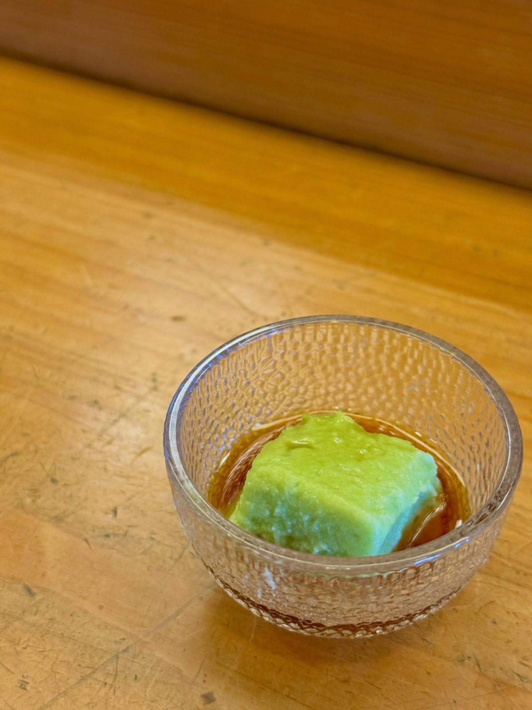
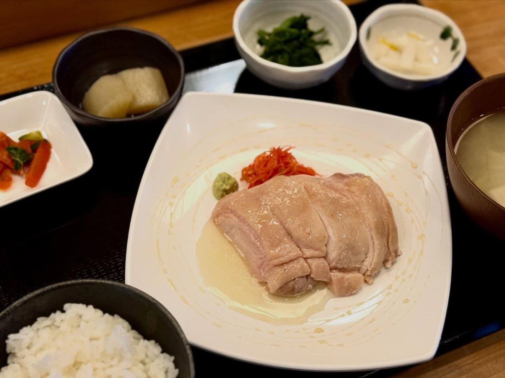
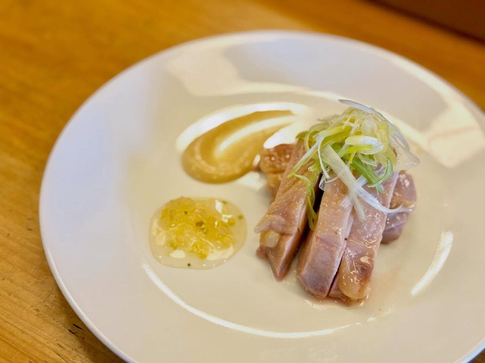
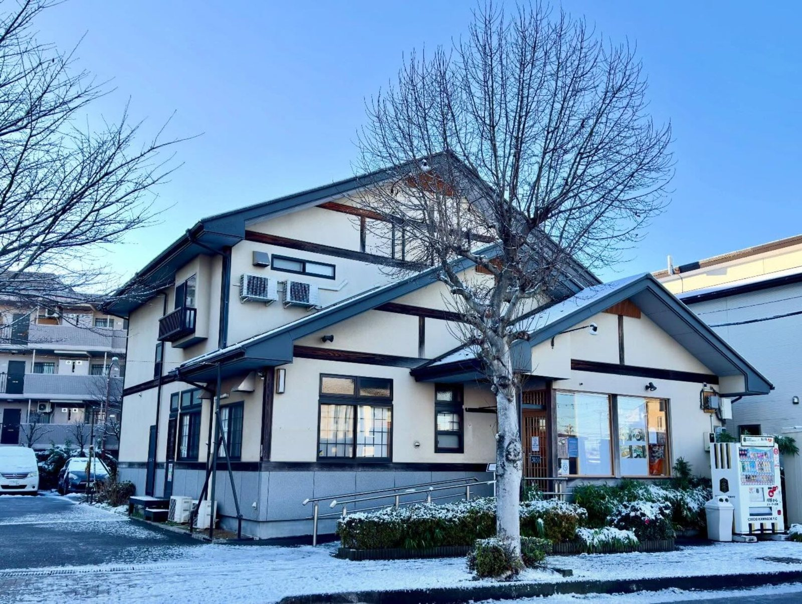

今週の肉料理｜鶏もも肉のコンフィ
じっくり火を入れた鶏もも肉のコンフィ。合わせるソースは週替わりで、照り焼き、マスタード、西京味噌、大根の和風、カリフラワーなどが登場します。
OBANZAI & TEISHOKU — FUJIMINO OI
畑と海から、まっすぐに。
ふじみ野・大井の、自然派おばんざいの食堂です。
11:30–14:00（L.O.13:30）｜日・月曜定休｜お支払いは現金のみ
ABOUT
ふじみ野市大井の住宅街、まごころBASEふじみ野の1階にある食堂です。日本料理の板前が厨房に立ち、地元の野菜を中心にした「自然派おばんざい」の定食をお出ししています。
お魚かお肉のどちらかを選ぶと、季節のおばんざい三品、ごはん、具沢山のお味噌汁、そして野菜のサラダバーがついてきます。魚は店内で捌いてから焼き、煮る。野菜は小室さんちの長葱や枝豆、斉藤さんの人参や紫カリフラワーなど、顔の見える畑から届いたものが並びます。
おばんざいは日替わり、肉料理のソースは週替わり。シェフの気まぐれは、その日に来ないと出会えません。

その日の畑と、その日の魚から。
GALLERY




SHOP INFO
| 店名 | 自然派おばんざい みんなのごはん |
|---|---|
| 住所 | 埼玉県ふじみ野市大井2-2-2 まごころBASEふじみ野 1F |
| アクセス | 東武東上線 ふじみ野駅 西口から徒歩約15分 駐車場あり |
| 営業時間 | 11:30–14:00（L.O.13:30） |
| 定休日 | 日曜・月曜 |
| お支払い | 現金のみ |
| 電話 | 070-7570-8592 |
RESERVATION
ご予約はお電話のみで承っています。SNSのメッセージやメールでのご予約は受け付けておりませんので、恐れ入りますがお電話をお願いいたします。当日・直前のご予約もお気軽にどうぞ。
受付時間：10:00–15:00（日曜・月曜を除く）